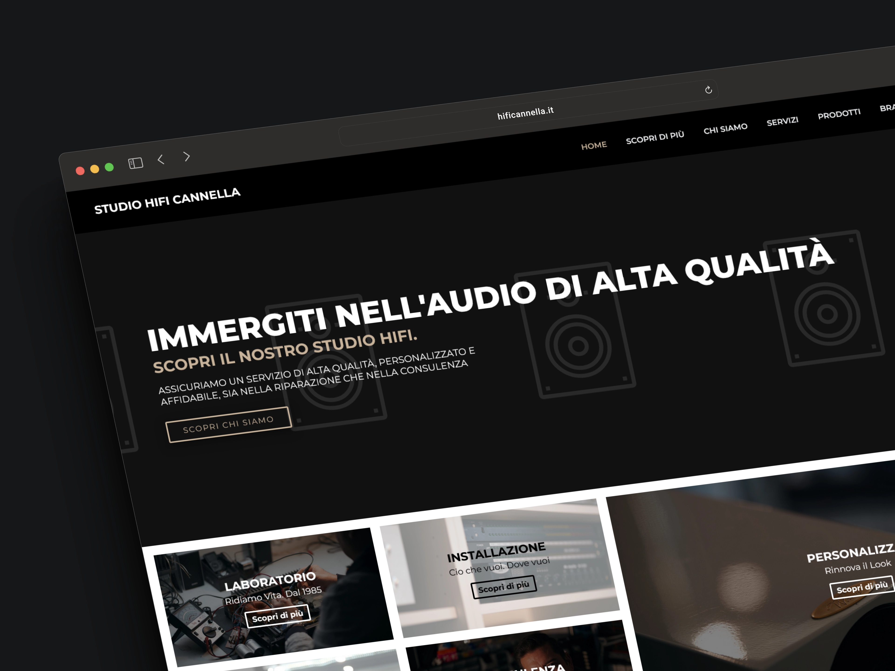
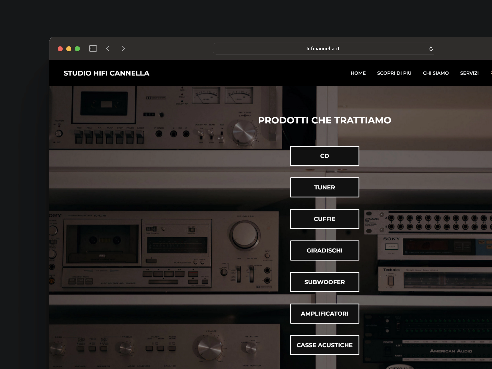
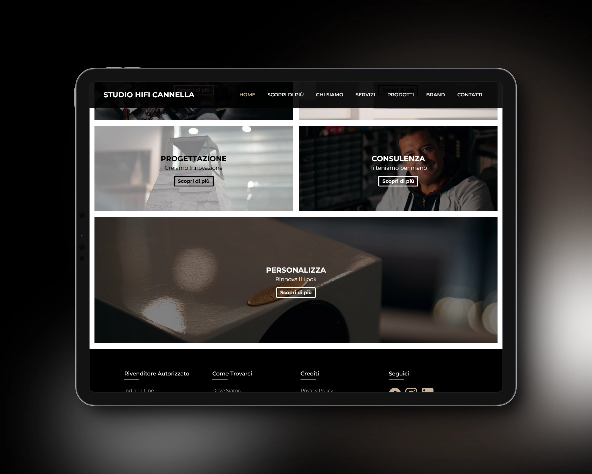
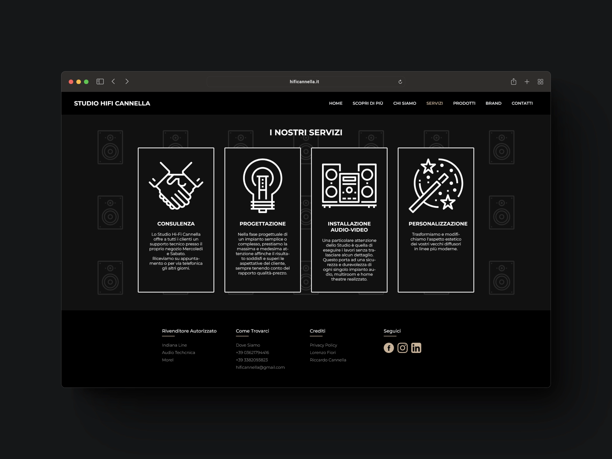
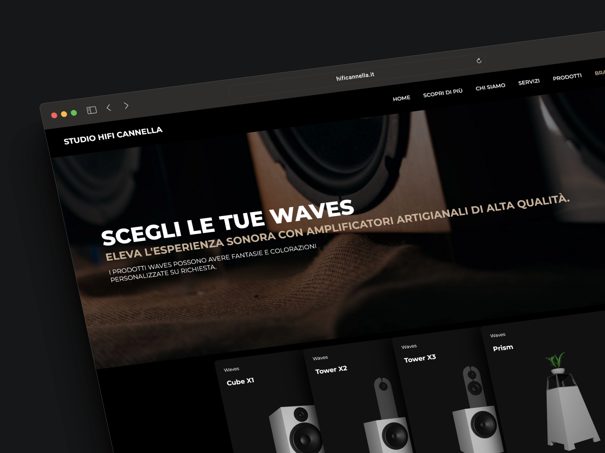
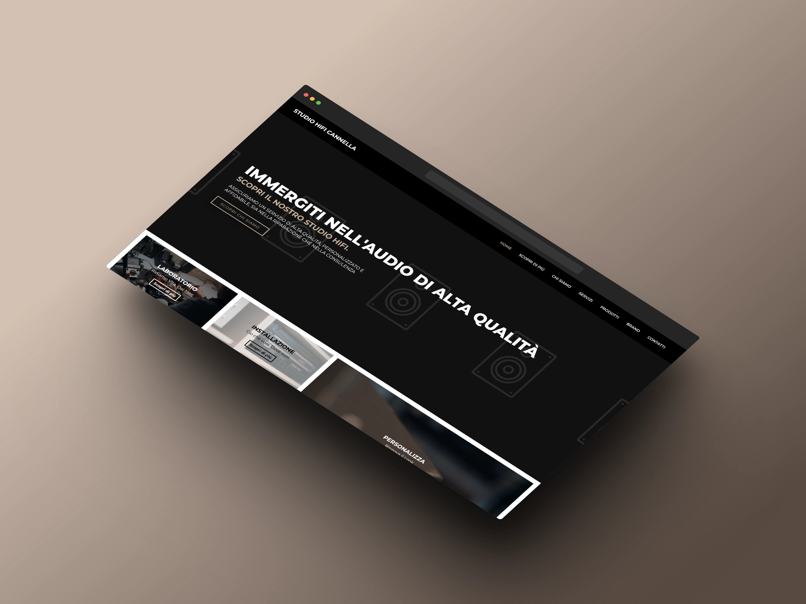

Lorenzo Fiori
Back to Projects
High Fidelity Audio - UI & UX
My work at HiFi Cannella allowed me to combine my passion for photography and web development to create a digital platform that effectively represented the brand and enhanced its online presence. It was a rewarding experience that honed my skills in visual storytelling, web design, and client collaboration.





